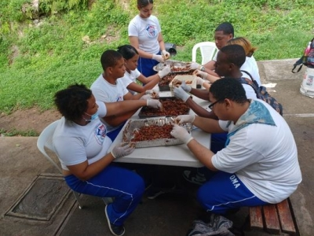

Paquetes Educativos
El Jardín, como parte de su enfoque en la educación ambiental, ofrece un programa educativo que complementa la enseñanza formal con actividades escolares diseñadas para fortalecer el aprendizaje sobre el medio ambiente.
Costo de los Paquetes
- Para escuelas públicas: RD$40.00 por persona.
- Colegios: RD$60.00 por persona.
- Universitarios: RD$50.00 por persona.
Información Práctica
Se debe programar la visita con una semana de anticipación.
El grupo debe ir con la vestimenta obligatoria del centro educativo y al menos un maestro o coordinador debe estar presente.
El paquete educativo se paga en la boletería.
Información de Contacto
Teléfono: (809) 385-2611 ext. 250
Correo electrónico: educacionambiental@jbn.gob.do
Dirección: Av. República de Colombia, esquina Los Próceres, Sector Altos de Galá. D.N.